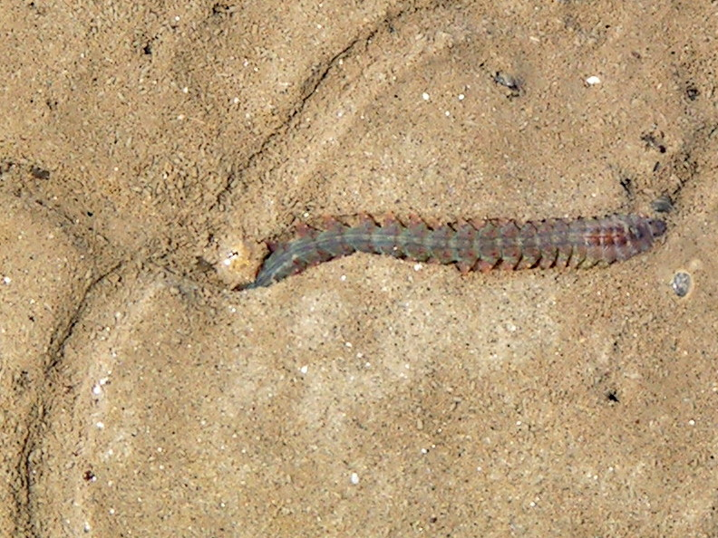
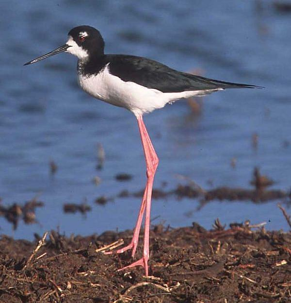

For this exercise you will work in small (3 - 5 people) groups to analyse data from two case studies (see below for details). The overall aim of this exercise is to challenge you with data typically obtained from biological and ecological studies, use R to fit suitable linear models to test specific research questions and then validate these models. As you might have guessed, data from both of these case studies contain a number of issues and as a result the standard linear modelling approach is unsuitable. Your job is to first identify what the problems are and then identify the causes of these problems.
So, for each case study you will need to:
For all of the steps above, it would be great to document your workflow using an R markdown document in order to create a report detailing your approach and highlighting the issues (either pdf or html format is ok). We can then share our reports on MyAberdeen and learn from each other! Also, as the course progresses and you learn how to extend the linear model to deal with these issues we will return to these two datasets (and R markdown documents) to analyse them correctly!
If you would prefer to work from the pdf version of this document you can find this here.
If you want to work alongside my R markdown document you can find a link at the end of each case study section.
These data were obtained from a mesocosm experiment which aimed to examine the effect of benthic polychaete (Hediste diversicolor) biomass on sediment nutrient (NH4, NO3 and PO3) release. At the start of the experiment replicate (n = 3) mesocosms were filled with homogenised marine sediment and assigned to one of five polychaete biomass treatments (0, 0.5, 1, 1.5, 2 g per mesocosm). The mesocosms were allowed to acclimatise for 24 h after which the concentration of either NH4, NO3 or PO3 was measured in the water. The concentration of only one nutrient was measured in each mesocosm. The researchers were particularly interested in whether the nutrient concentration differed between polychaete biomass treatments and whether these effects were dependent on the type of nutrient.

Data for this case study is saved in a tab delimited file called Hediste.txt which you can download from the Data link. Save this data file in your data directory in your RStudio project.
The data file contains the following variables:
concentration : the nutrient concentrationbiomass : the polychaete biomass levelfnutrient : the nutrient measured
As a hint, you should be looking out for violations of the homogeneity of variance assumption for this dataset.
1. Create a new R markdown document in your BI5302 RStudio project and save it using a suitable file name. I suggest you specify the default output format as html but feel free to experiment with pdf (you can always change this later). Use this R markdown document to record your data exploration, statistical analysis (including graphs and tables) and commentary. For this exercise I would also suggest that you embed your R code as visible chunks within the document (use echo = TRUE) for later reference.
2. Import the Hediste.txt dataset into R and assign it to a suitably named variable. Examine the structure of the dataframe and convert the biomass variable to a factor and store it as a new variable in your dataframe.
3. How many replicates are there for each biomass and nutrient combination?
4. Explore these data graphically. Are there any obvious outliers in the concentration variable for each of the biomass or nutrient variable levels (perhaps the dotchart() function with the group argument might help)? Use an appropriate plot to examine whether there are any biomass and/or nutrient effects on concentration (perhaps a boxplot?). Do you notice a potential issue regarding the between group variances?
5. With reference to the study aims stated above, fit an appropriate linear model to these data using the lm() function.
6. Use appropriate residual plots to identify whether the modelling assumptions are met. Don’t forget to also plot the residuals from this model against all explanatory variables. Can you see a problem? Can you assume homogeneity of variance of the residuals from your model? If not, then try to identify the cause of this problem. Make sure you describe and discuss this process in your R markdown document.
If you want to work alongside my solutions you can find the relevant files below. Download the R markdown file and open it in your RStudio project.
These data were collected from bird surveys conducted on two Hawaiian islands (Maui and Oahu) from 1956 - 2003. The annual abundance of black-necked stilts (Himantopus mexicanus knudseni) was measured each winter using transect surveys on each island. Along with bird counts, annual rainfall data for the region was also obtained from the National Climate Data Center. The researchers were interested in understanding whether levels of rainfall impacted on bird abundance and whether any impact was different between the two islands.

Data for this case study is saved in a tab delimited file called hawaii3.txt which you can download from the Data link. Save this data file in your data directory in your RStudio project.
The data file contains the following variables:
abund : the abundance of stiltsrainfall : the amount of annual rainfalllocation : the name of the islandyear : the year the data was collected at each site.As a hint, you should be looking out for violations of both the homogeneity of variance assumption and independence of residuals assumption for this dataset.
1. Create a new R markdown document in your BI5302 RStudio project and save it using a suitable file name. I suggest you specify the default output format as html but feel free to experiment with pdf (you can always change this later). Use this R markdown document to record your data exploration, statistical analysis (including graphs and tables) and commentary. For this exercise I would also suggest that you embed your R code as visible chunks within the document (use echo = TRUE) for later reference.
2. Import the hawaii3.txt dataset into R and assign it to a suitably named variable. Examine the structure of the dataframe.
3. How many observations are there for each island?
4. Explore these data graphically. Are there any obvious outliers in the abund variable for each of the locations variable levels (perhaps the dotchart() function with the group argument might help)? Next, use an xyplot (from the lattice package) or a coplot to explore any relationships between bird abundance and rainfall for each of the two islands Finally, create a plot to examine how bird abundance changes over time (year) for each of the two islands.
5. With reference to the study aims stated above, fit an appropriate linear model to these data using the lm() function.
6. Use appropriate residual plots to identify whether the modelling assumptions are met. Display the usual residual diagnoatic plots. Don’t forget to also plot the residuals from this model against all explanatory variables (including year). Can you see any problems? Can you assume homogeneity of variance of the residuals from your model? If not, then try to identify the cause of this problem. Can you assume independence of your residuals? Make sure you describe and discuss this process in your R markdown document.
If you want to work alongside my solutions you can find the relevant files below. Download the R markdown file and open it in your RStudio project.